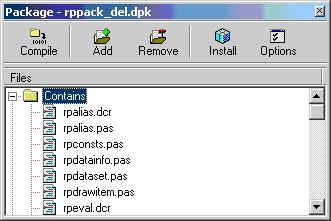
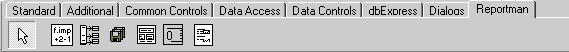
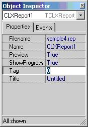
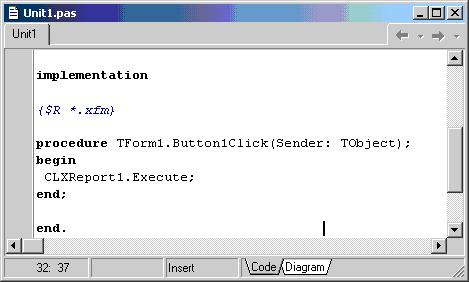

To integrate the report in Delphi/Kylix you must install first the correct packages:
| Delphi | Kylix |
| rppack_del.dpk | rppack.dpk |
| rppackv_del.dpk | rppackv.dpk |
Open the packages in the correct order with delphi/kylix and click Install button.
If you have problems compiling you can disable some dataaccess components not available for you at rpconf.inc file, for example if you have not installed IBX:
// Database drivers to be used
{$DEFINE USESQLEXPRESS}
//{$DEFINE USEIBX}
{$DEFINE USEADO}
{$DEFINE USEBDE}
New components appear in the palette (reportman section) the most important is the TCLXReport component.

To pass custom opened datasets (any dataaccess engine with a TDataset descendant like Zeos, Direct Oracle Access...) to the reporting engine you can use the AliasList property in TCLXReport and a TRpAlias component that establishes relations between aliases and Application datasets.
Drop the TNewCLXReport to a form and select a report by clicking the button beside the Filename property. You can select also the preview property and the tittle.

Place a button and call the execute methot at onclick event as this:

If you have problems compiling the application check the library path includes the path to the directory where reportman packages are stored.